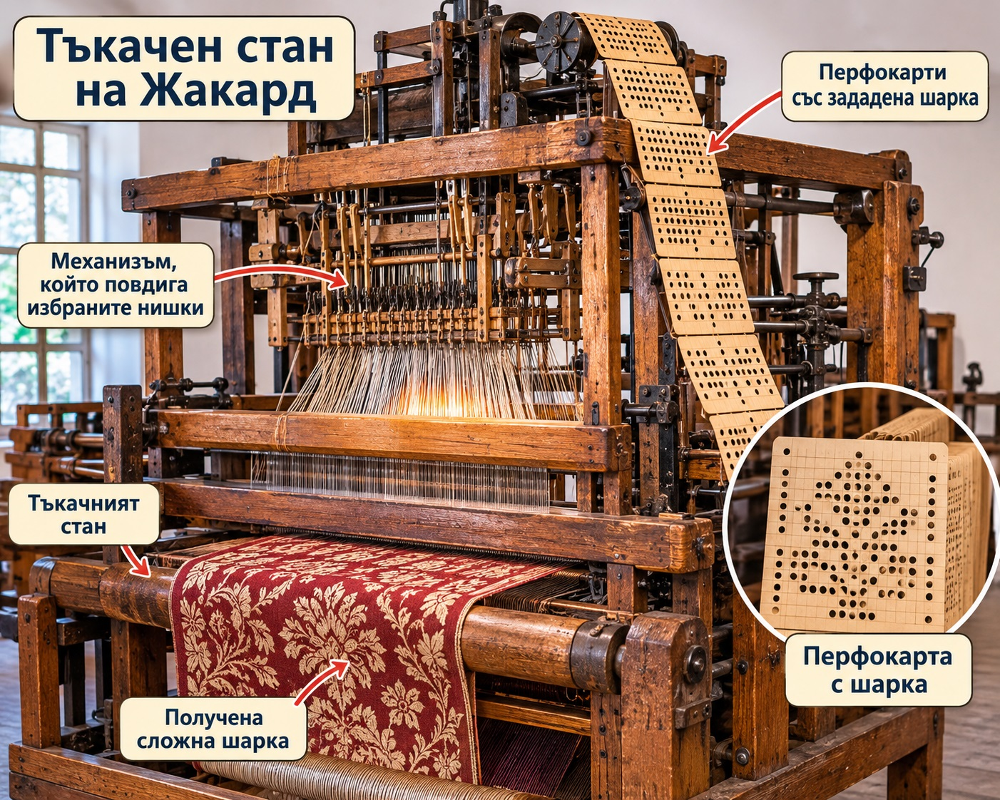
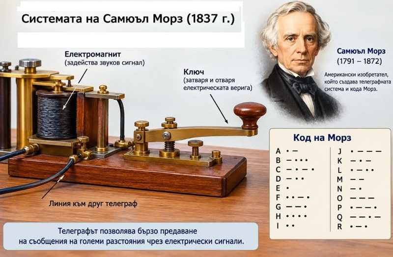
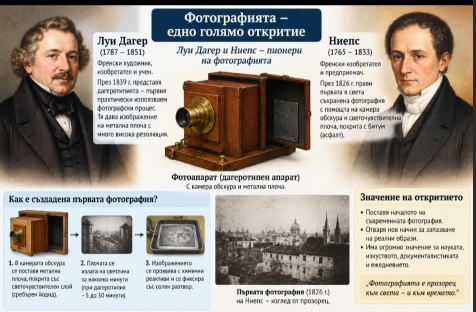
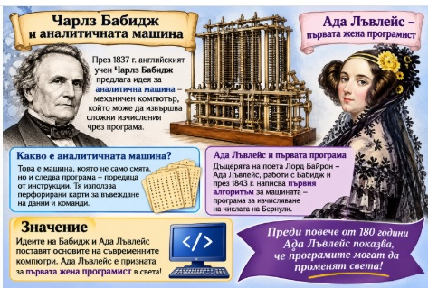
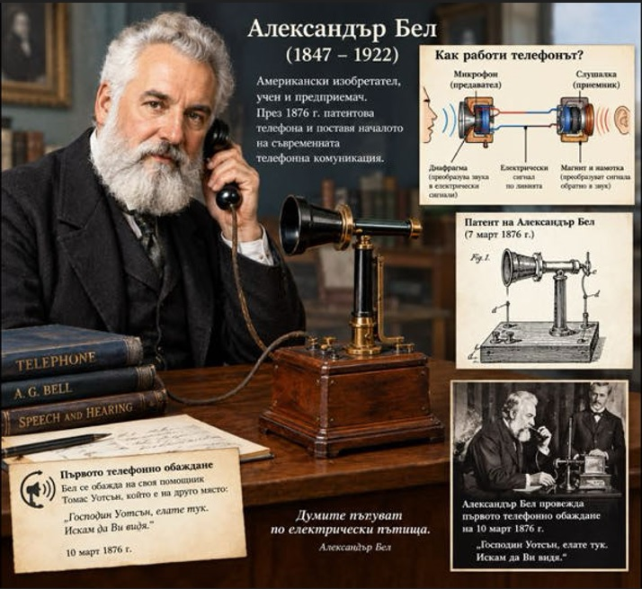
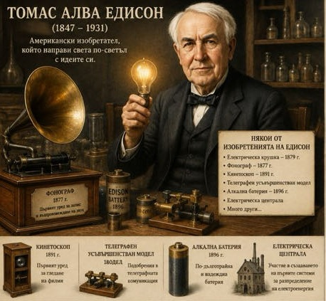
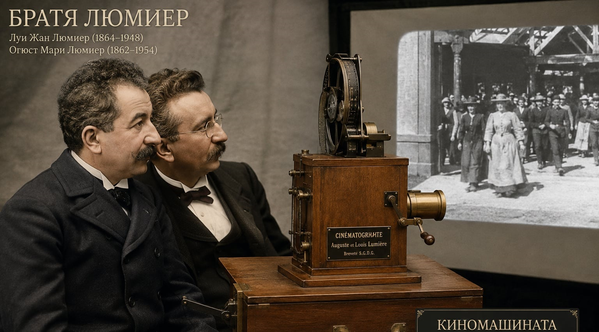
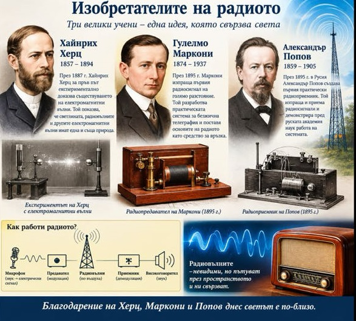

Джеймс Харгрийвс създава машина, която позволява едновременното предене на няколко нишки.
Така производството на платове става много по-бързо.
Джеймс Харгрийвс създава машина, която позволява едновременното предене на няколко нишки.
Така производството на платове става много по-бързо.


Изобретатели
Изобретение е предмет, процес или техника, които съдържат елемент от иновация (нововъведение). В определени случаи дадено изобретение е под правна защита по силата на патент. През различните времена човечеството е изобретявало предмети и методи за осъществяване на задачи, които са водели до даден резултат по нов или различен начин, като обикновено целта е била резултатът да бъде достигнат по-бързо, по-ефикасно, по-лесно или по-евтино.
Жозеф Мари Жакард – изобретателят на тъкачния стан с перфокарти

Жозеф Мари Жакард (1752–1834) е френски изобретател, който променя света на тъкачеството. През 1804–1805 г. той усъвършенства специален тъкачен стан, който използва перфокарти с предварително направени отвори.
Всяка карта съдържала определена информация, която управлявала повдигането на нишките. Така машината можела автоматично да създава сложни и красиви шарки върху платовете, без тъкачът да извършва всички действия ръчно.
Изобретението на Жакард направило производството на красиви тъкани по-бързо и по-лесно. Неговата идея за управление на машина чрез перфокарти вдъхновила по-късно Чарлз Бабидж при проектирането на Аналитичната машина.
Интересен факт:
Перфокартите на Жакард се смятат за един от предшествениците на компютърното програмиране – машината изпълнявала инструкции, зададени предварително чрез отвори в картите.
.
Човекът, който накара света да общува с точки и тирета

Самюъл Морз първоначално мечтаел да стане художник и дори получил златен медал за своя картина в Лондон. Но една среща и интересът му към електричеството променили живота му. Той се заел с невероятната идея хората да могат да изпращат съобщения на големи разстояния почти мигновено.
Така Морз създал електромагнитния телеграф и специална азбука от точки и тирета, която и днес носи неговото име – Морзова азбука.
На 24 май 1844 г. било изпратено първото официално телеграфно съобщение между Вашингтон и Балтимор. Това поставило началото на нова ера в комуникациите.
Благодарение на изобретението му новините и важните съобщения вече можели да пътуват много по-бързо от всякога.
Самюъл Морз доказал, че понякога само няколко точки и тирета са достатъчни, за да свържат целия свят!
.
Как светлината се научи да рисува – раждането на фотографията

В началото на XIX век двама французи – Жозеф Ниепс и Луи Дагер, мечтаят да открият начин, по който светлината да запечатва образите от заобикалящия ни свят.
През 1826–1827 г. Ниепс създава първата запазена фотография в историята. За да я получи, той използва специална плоча и камера обскура, като експонирането продължава много часове.
По-късно Ниепс започва съвместна работа с Луи Дагер. След смъртта на Ниепс Дагер продължава изследванията и през 1839 г. представя нов фотографски метод, наречен дагеротипия.
Той позволява получаването на много по-ясни изображения за значително по-кратко време.Така двамата учени поставят основите на съвременната фотография. Благодарение на техните открития днес можем да запазваме спомени и да улавяме мигове от живота чрез снимки.
Интересен факт:
Първата запазена фотография на Ниепс показва изглед от прозореца на неговия дом и е създадена след експониране, продължило няколко часа!
.
Аналитичната машина

Чарлз Бабидж – бащата на компютъра
През XIX век английският математик и изобретател Чарлз Бабидж създава идеята за аналитична машина – механично устройство, което можело да извършва сложни математически изчисления.
Тя имала устройство за обработка на данни, памет и можела да изпълнява различни команди чрез перфокарти.Идеята за перфокартите на аналитичната машина е взета от Жозеф Мари Жакард.Машината била толкова сложна за времето си, че не успели да я построят напълно. Въпреки това идеята на Бабидж поставя основите на съвременния компютър. Затова той е наричан „бащата на компютъра“.
Ада Лъвлейс – първата жена програмист
Ада Лъвлейс (дъщеря на лорд Байрон) на е английска математичка, която работи върху идеите на Бабидж. През 1843 г. тя описва последователност от инструкции, с които аналитичната машина би могла да изчислява числа на Бернули.
Това се смята за първата публикувана компютърна програма в историята. Ада Лъвлейс е призната за първата програмистка в света. Тя предвижда, че подобни машини един ден ще могат не само да смятат, но и да обработват различна информация.
.
Александър Греъм Бел – изобретателят, който превърна гласа в електрически сигнал и свърза света чрез телефона

Той е шотландско-американски учен, изобретател и преподавател, останал в историята като създател на първия практически използваем телефон.
През 1876 г. Бел успява да предаде човешки глас по електрически път.
Това откритие променя света! За първи път хората могат да разговарят, без да се намират на едно и също място. Телефонът постепенно се превръща в едно от най-важните средства за комуникация.
Интересното е, че Бел посвещава голяма част от живота си на помощта за хората с увреден слух. Той работи и върху други изобретения, свързани със звука и комуникациите.
.
Човекът, който освети света
Изобретател, предприемач и новатор, превърнал научните идеи в открития, променили ежедневието на хората.

Едисън е американски изобретател, известен като един от най-плодовитите новатори в историята. Още като дете проявява любопитство към науката и техниката. През живота си получава над 1000 патента за различни изобретения и усъвършенствания.
През 1877 г. Едисън създава фонографа – устройство, което може да записва и възпроизвежда звук. Това е истинска сензация, защото за първи път хората могат да чуят записан човешки глас!
Няколко години по-късно той работи върху усъвършенстването на електрическата крушка и създава система за разпределение на електрическа енергия. През 1882 г. в Ню Йорк започва работа първата електроразпределителна мрежа, която осигурява електрическо осветление на десетки потребители.
Едисън не работи сам – той създава специални лаборатории, в които учени и техници заедно търсят нови решения. Неговата упоритост, изобретателност и стремеж към усъвършенстване оставят трайна следа в развитието на техниката.
.
Огюст и Луи Люмиер – бащите на киното, превърнали движещите се снимки в магия!

Френските братя Огюст и Луи Люмиер са сред създателите на киното. През 1895 г. те изобретяват кинематографа – специален апарат, който може да заснема, проявява и прожектира движещи се изображения.
На 28 декември 1895 г. в Париж братята организират първата платена публична прожекция на филми пред публика. Зрителите виждат кратки сцени от ежедневието – работници, които напускат фабрика, влак, който пристига на гарата, и хора, които се разхождат.
Особено впечатление прави филмът с пристигащия влак. За първи път хората виждат как изображенията оживяват върху голям екран!
Така братята Люмиер поставят началото на киното и променят завинаги света на развлеченията.
.
Кой изобрети радиото – откривателите, които направиха света по-близък?

Историята на радиото е дело на няколко велики учени и изобретатели, които един след друг откриват тайните на електричеството и електромагнитните вълни.
Първи важни стъпки правят Ханс Кристиан Оерстед и Майкъл Фарадей, които изследват връзката между електричеството и магнетизма. По-късно Джеймс Максуел теоретично доказва съществуването на електромагнитните вълни, а Хайнрих Херц успява да ги създаде и открие в лаборатория.
След него Едуар Бранли разработва устройство, което може да открива радиовълни. В края на XIX век Александър Попов и Гулиелмо Маркони правят важни крачки към създаването на безжичната радиовръзка. През 1895 г. Попов демонстрира приемник на радиосигнали, а Маркони развива системи за предаване на съобщения без проводници на големи разстояния.
Така благодарение на усилията на много учени се ражда радиото – изобретение, което променя света. За първи път хората могат да изпращат съобщения по въздуха, без да използват кабели.
Радиото поставя началото на нова ера в комуникациите и прави възможно предаването на новини, музика и гласове до милиони хора.
Интересен факт
Радиото няма само един изобретател – то е резултат от откритията и труда на много учени, всеки от които допринася за неговото създаване.